정부조사·통계
통계·조사·설문의 기준 자료
청년정책을 설명하고 검토할 때 직접 인용할 수 있는 주요 통계·조사·설문과 공식 원자료를 모았습니다.

청년정책을 설명하고 검토할 때 직접 인용할 수 있는 주요 통계·조사·설문과 공식 원자료를 모았습니다.

청년을 직접 대상으로 조사하거나, 청년만 따로 떼어 발표한 공식 통계를 건별로 모았습니다.
국무조정실이 청년기본법에 따라 2년마다 발표하는 대표 실태조사로, 노동·주거·건강·관계까지 폭넓게 담고 있습니다.
통계청 SGIS에서 청년 인구, 부모동거, 주택소유, 취업활동 같은 지표를 지역별로 바로 볼 수 있습니다.
통계청 경제활동인구조사 기반 자료로 고용률, 첫 일자리 소요기간, 직장 체험, 취업시험 준비를 확인할 수 있습니다.
통계청 사회조사로 청년의 결혼, 출산, 노동, 가치관 변화를 묶어 보여주는 기획 보도자료입니다.
정책브리핑과 법령, 통계, 연구자료까지 제안서 근거를 보강할 때 자주 쓰는 공식 사이트를 우선순위대로 묶었습니다.
정부가 모아둔 청년정책 기사, 해설, 제도 소개를 한 화면에서 훑을 수 있는 공식 특집 페이지입니다.
청년의 범위, 국가와 지자체의 책무, 실태조사와 기본계획 근거를 법령 원문으로 바로 확인할 수 있습니다.
인구, 고용, 주거, 복지 같은 국가승인통계를 표와 시계열로 바로 확인할 수 있습니다.
CSV, XLS, API 형태의 원자료를 내려받아 지역별·대상별 근거를 직접 가공할 때 유용합니다.
e-나라지표, 국민 삶의 질 지표, 저출생 통계지표처럼 정책 설명이 붙은 핵심 지표를 한 번에 볼 수 있습니다.
청년·청소년 정책 연구보고서와 데이터아카이브를 확인할 때 가장 먼저 보기 좋은 전문 연구기관입니다.
국책연구기관 연구보고서와 정책·연구자료를 통합검색으로 찾을 수 있습니다.
이슈와논점, NARS 현안분석처럼 쟁점을 빠르게 훑을 수 있는 입법·정책 자료를 볼 수 있습니다.
국내연구자료와 경제정책정보를 기관별로 모아 볼 수 있어 배경 설명과 선행연구를 함께 잡기 좋습니다.
AI는 조사와 정리를 돕는 용도로만 쓰는 편이 안전합니다.
초안을 정리하고 검토받을 내용을 미리 적어두면 더 빠르게 이어집니다.